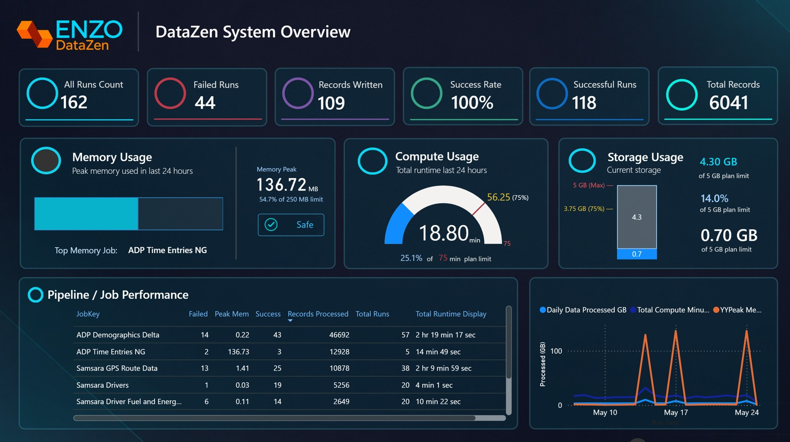

Technical integration and communications
DataZen / ENZO Unified
2026–present
- API and SQL workflow testing, with practical data-pipeline examples.
- Power BI reporting, usability feedback, and technical communication.
Read moreShow less about Technical integration and communications at DataZen / ENZO Unified
I work at DataZen / ENZO Unified on the practical path from public data sources to useful reporting: testing workflows, preparing examples, and explaining how the product behaves.
My April 2026 work record documents HTTP/API connections, weather and World Bank data, nested JSON responses, SQL tables and views, and importing data into Power BI. A weather-advice example moved raw forecast responses into cleaner tables and user-facing recommendations.
The work also includes reviewing documentation, recording reproducible usability issues, suggesting beginner examples, and contributing product copy.
- Public-data API experiments and SQL transformations.
- Documentation review and practical beginner examples.
- Issue reporting, interface feedback, and Power BI design.